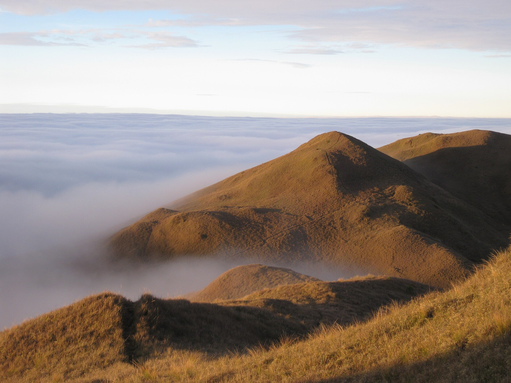
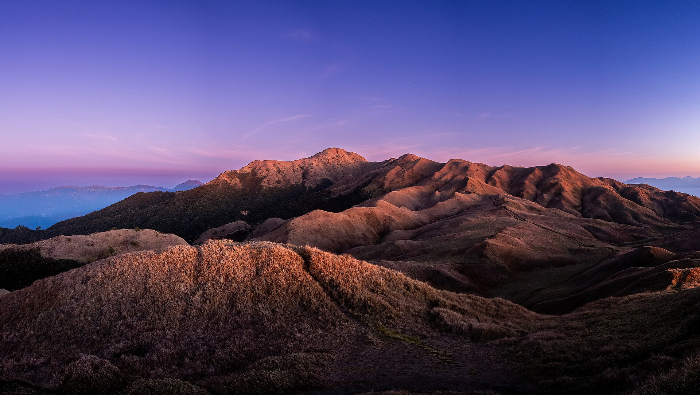

Mount Pulag, the highest peak in Luzon (2,928 meters), is the third highest in the Philippines. It is sacred to indigenous tribes including the Ibaloi, Kalanguya, and Kankana-ey. It is famous for its sea of clouds and rich biodiversity.

Mount Pulag offers breathtaking sunrise views above the clouds. Best time to visit is November to April. Visitors must register and follow park rules.